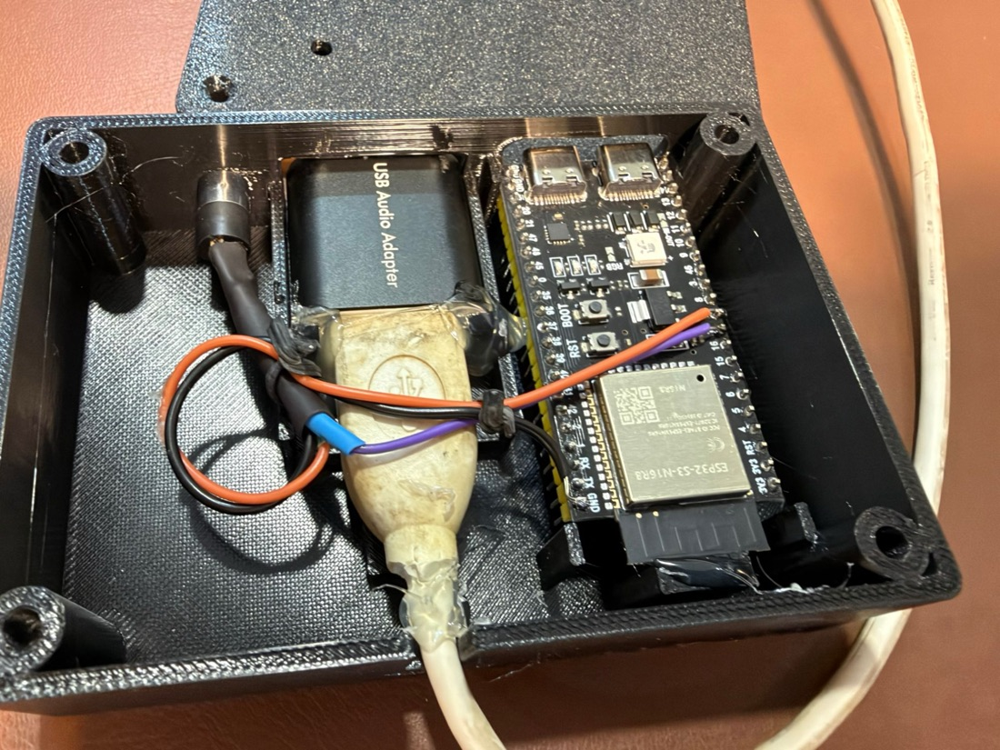

Making the SPE Expert follow an RGO ONE over TTL CAT
Manoj VU2CPL · November 2026 · source: github.com/vu2cpl/rgo-spe-cat
My Expert 1.5K-FA sits next to an RGO ONE HF transceiver. The RGO ONE is not on the amp's list of supported radios, and it has only one USB CAT port. I wanted the amp to change band by itself, and I still wanted WSJT-X and the logger on that same CAT port. So I built a small box that sits between them. This page covers the amp side: the cable, the settings, and one thing about the amp's TTL CAT port that took some finding.

How it works
- An ESP32-S3 is the only thing on the RGO ONE's USB CAT port. It reads the frequency and mode every 150 ms.
- To the amp, the box looks like a Kenwood TS-480. The amp asks
IF;about every 240 ms, and the box answers from the radio's latest state. It also answersFA;andID;. - If the radio stops answering, the box stops answering the amp too, so the amp never sits on an old band thinking it is current.
- The box runs from a USB charger, not from the PC. The amp keeps following the radio with the PC switched off.
- Over Wi-Fi it also gives CAT to WSJT-X and loggers, so the PC software and the amp share the one radio port with no conflict.
Keying is a separate, normal lead: the radio's RCA linear-amp output to the SPE KEY IN. The CAT link only sets the band.

The amp cable
Only three wires are needed. I put a 3.5 mm stereo jack on the box (the same size as the audio jacks, so the panel labels tell them apart) and made a 3.5 mm plug to DB15 male cable. The amp's CAT socket takes a male plug.
| Box jack | Inside the box | Amp DB15 pin |
|---|---|---|
| Tip | ESP32 GPIO17 (UART TX) through 220 Ω | 10 RX TTL (data into the amp) |
| Ring | 10 k to GPIO18, 20 k from GPIO18 to ground | 3 TX TTL, 5 V (the amp's polls) |
| Sleeve | Ground | 4 GND, with 11 KEN TTL joined to 4 in the hood |
| Leave open | 8 REMOTE ON, 12 RELAY, and all the rest | |
- Pin 11 to ground selects the 5 V TTL Kenwood interface instead of RS-232 on pins 1 and 9. Without it the amp hears nothing on pin 10.
- Pin 3 is 5 V and the ESP32 is not 5 V tolerant, hence the 10 k / 20 k divider. The ESP32's 3.3 V output into pin 10 is read fine by the amp.
- The 220 Ω on the tip protects the ESP32 for the moment a jack shorts as the plug goes in. Plug and unplug it with the box off anyway.
- Keep pin 12 (RELAY) isolated. It is the amp's keying line.
Amp settings
| Where | Setting |
|---|---|
| SET → CAT | KENWOOD, 9600 baud, on the input the box is plugged into (IN 1 or IN 2) |
| After any CAT change | Power-cycle the amp |
| Check | SET → MANUAL TUNE shows the band and frequency it is getting |
The catch: the SPE's TTL CAT is inverted
With a plain UART, the amp's IF; polls arrived as junk (62 5B 2E, which prints as b[.), and the amp ignored everything I sent it. I put the ESP32 in a mode that times the edges on the input pin instead of decoding them. That showed 104 µs bits (9600 baud) with the line idling at 0. With both RX and TX inverted in the UART driver (one flag on the ESP32), the polls decode as IF; and the amp follows at once. An Arduino with a software serial, or a USB-TTL adapter, needs the same inversion, or a transistor inverter on each line.
What I measured on the line, for anyone writing their own firmware:
- The amp polls
IF;about every 240 ms at 9600 8N1, with about 3 ms between characters. - A normal TS-480
IFreply works. I pass the radio's ownIFframe through unchanged. - The manual also describes a listen-only hookup (pin 10 and ground only). The firmware supports it by pushing
FAon every change, but I have not tested it with the inversion.


Result
Keyed up with the amp in operate on three bands: the amp band matched each time, with no band-data cable and no PC needed. It now runs alongside WSJT-X on the same radio.
The full build, including the RGO ONE audio and PTT side, is on the main project page. Firmware, enclosure and build notes are on GitHub: github.com/vu2cpl/rgo-spe-cat. Questions are welcome.
73, Manoj VU2CPL